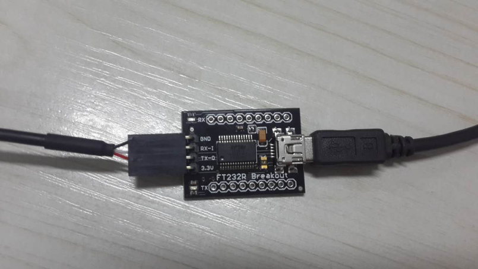
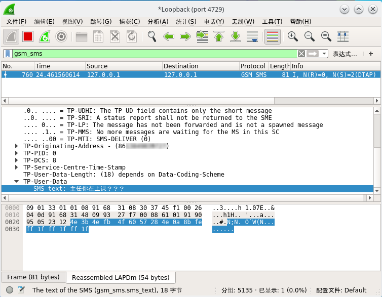

前言
Osmocom-BB平台实现了对2G网络短信的嗅探抓取，利用这个平台再加上简单的设备就可以对附近的某一频点进行监听，当该频点有短信通过2G网络发送给基站时，其明文内容便会被我们嗅探到．这已经是2011年的技术了，网上可以找到大量资料．我自己做了一遍实验，在实验过程在遇到了许多问题，在此记录一下实验过程．文章分为上下篇，上篇主要介绍如何编译Osmocom-BB平台并将固件刷入手机内存，之后使用wireshark嗅探短信．下篇介绍如何将嗅探到的短信存入数据库，再通过浏览器从本地搭建的服务器内读取短信内容．
实验环境
- C118手机一部,淘宝售价35元左右(手机＋电池＋充电器)
- USB转串口模块，这里我使用的是FT232R，淘宝售价35元
- C118 2.5mm耳机头转杜邦数据线，淘宝售价25元
- MiniUSB连接线，这个应该到处都有，淘宝售价10元
- 可以连接网络的Linux操作系统，建议使用虚拟机，我使用的是64位Blackarch

实验步骤
为了避免出现使用sudo时相对位置发生变化的问题，我使用绝对路径作例子，自己实验时可根据个人习惯更改命令．同时需要注意，只有当权限不足时才应该使用sudo，普通用户有权限时不要加
首先在自己用户的家目录创建文件夹GsmSniffer，以我的电脑为例
cd /home/jeni/
mkdir GsmSniffer
由于现在系统及软件版本相比之前高了好多，所以再去编译安装官方当时推荐的软件版本会出现各种各样的问题导致编译无法通过，所以直接使用编译好的交叉编译环境．
- 百度网盘：传送门 提取密码：uavw
自己系统是多少位的就下哪个版本，下载完成后解压到刚刚创建的GsmSniffer文件夹内,解压命令为：
tar xf bu-2.16.1_gcc-4.0.2-c-c++_nl-1.14.0_gi-6.4_x86-64.tar.bz2
mv gnuarm-* ~/GsmSniffer/gnuarm
这样就完成了关于Osmocom-BB交叉编译环境的搭建，接下来添加环境环境变量并使其立即生效,zsh用户添加到.zshrc文件内
echo "export PATH=/home/jeni/GsmSniffer/gnuarm/bin:$PATH" >> /home/jeni/.bashrc
source /home/jeni/.bashrc
编译libosmocore,没有权限时加命令前sudo
cd /home/jeni/GsmSniffer
git clone git://git.osmocom.org/libosmocore.git
cd libosmocore
autoreconf -i
sudo pacman -S pcsclite
./configure
make
sudo make install
cd ..
sudo ldconfig
ldconfig命令一定不要忘记执行，否则osmocomBB编译后运行时会出现找不到libosmocore.so.4的错误
编译Osmocom-BB:
cd /home/jeni/GsmSniffer
git clone git://git.osmocom.org/osmocom-bb.git
cd osmocom-bb
git checkout --track origin/luca/gsmmap
cd src
make
到这里osmocom-bb的编译就完成了
问题一：
/home/jeni/GsmSniffer/osmocom-bb/src/target/firmware/include/asm/swab.h: Assembler messages: /home/jeni/GsmSniffer/src/target/firmware/include/asm/swab.h:32: Error: no such instruction:eor %edx,%ecx,%ecx,ror’ make[4]: *** [gsmtap_util.lo] 错误 1 make[4]: Leaving directory/home/jeni/GsmSniffer/src/shared/libosmocore/build-target/src’ make[3]: [all] 错误 2 make[3]: Leaving directory/home/jeni/GsmSniffer/src/shared/libosmocore/build-target/src’ make[2]: *** [all-recursive] 错误 1 make[2]: Leaving directory/home/jeni/GsmSniffer/src/shared/libosmocore/build-target’ make[1]: [all] 错误 2 make[1]: Leaving directory `/home/jeni/GsmSniffer/src/shared/libosmocore/build-target’ make: *** [shared/libosmocore/build-target/src/.libs/libosmocore.a] 错误 2
问题二：
configure: error: C compiler cannot create executables See `config.log’ for more details make: *** [shared/libosmocore/build-target/Makefile] 错误 77
问题三：
error while loading shared libraries: libosmocore.so.4: cannot open shared object file: No such file or directory
问题四：
LD board/compal_e88/hello_world.compalram.elf arm-elf-ld: ../../shared/libosmocore/build-target/src/.libs/libosmocore.a(msgb.o): Relocations in generic ELF (EM: 3) arm-elf-ld: ../../shared/libosmocore/build-target/src/.libs/libosmocore.a(msgb.o): Relocations in generic ELF (EM: 3) arm-elf-ld: ../../shared/libosmocore/build-target/src/.libs/libosmocore.a(msgb.o): Relocations in generic ELF (EM: 3) arm-elf-ld: ../../shared/libosmocore/build-target/src/.libs/libosmocore.a(msgb.o): Relocations in generic ELF (EM: 3) ../../shared/libosmocore/build-target/src/.libs/libosmocore.a: could not read symbols: File in wrong format make[1]: [board/compal_e88/hello_world.compalram.elf] 错误 1 make[1]:正在离开目录 `/home/jeni/GsmSniffer/osmocom-bb/src/target/firmware’ make: [firmware] 错误 2
-
问题一和问题二：系统环境与源码不匹配造成的Gnuarm Toolchain无法使用，另一种可能是环境变量没有配置好，当配置好时在任意目录终端中输入arm,摁tab键补全时会出现如下内容：
[jeni@JenI ~]$ arm-elf- arm-elf-addr2line arm-elf-g++ arm-elf-gdbtui arm-elf-ranlib arm-elf-ar arm-elf-gcc arm-elf-insight arm-elf-readelf arm-elf-as arm-elf-gcc-4.0.2 arm-elf-ld arm-elf-run arm-elf-c++ arm-elf-gccbug arm-elf-nm arm-elf-size arm-elf-c++filt arm-elf-gcov arm-elf-objcopy arm-elf-strings arm-elf-cpp arm-elf-gdb arm-elf-objdump arm-elf-strip [jeni@JenI ~]$ arm-elf-
-
问题三：在出错目录执行
echo /usr/local/lib >> /etc/ld.so.conf ldconfig -v
-
问题四：在出错目录执行
git clean -dfx make
更改GsmSniffer文件夹及其子文件的所有者,至此前期环境搭建完成
sudo chown jeni:users /home/jeni/GsmSniffer -R
接下来进行物理设备的连接，需要注意的是数据线与FT232R模块连接时的顺序问题
黑/黄线 =====> GND 红线 =====> TX 白线 =====> RX

其他设备按照线的接口插好即可，此时C118手机应置于关机状态．当设备连接电脑时，FT232R模块红色和绿色灯同时亮起，此时可将固件刷入手机．固件只是以RAM TO ROM的形式临时刷写，当手机关机后固件则消失，开机依然可以进入摩托罗拉系统
输入lsusb,会若出现usb-serial，则说明连接成功
jeni@JenI ~ % lsusb Bus 002 Device 003: ID 1d57:fa60 Xenta Bus 002 Device 004: ID 0781:5583 SanDisk Corp. Bus 002 Device 006: ID 0403:6001 Future Technology Devices International, Ltd FT232 Serial (UART) IC Bus 002 Device 002: ID 8087:8000 Intel Corp. Bus 002 Device 001: ID 1d6b:0002 Linux Foundation 2.0 root hub Bus 001 Device 004: ID 04f2:b52b Chicony Electronics Co., Ltd Bus 001 Device 002: ID 8087:8008 Intel Corp. Bus 001 Device 001: ID 1d6b:0002 Linux Foundation 2.0 root hub jeni@JenI ~ %
进入osmocom-bb程序所在路径，启动osmocon刷入所需固件
cd /home/jeni/GsmSniffer/osmocom-bb/src/host/osmocon/ ./osmocon -m c123xor -p /dev/ttyUSB0 ../../target/firmware/board/compal_e88/layer1.compalram.bin
其中c123跟c123xor的区别就是是否检测数据总和
此时短按（摁一下）C118的开机键，固件会自动刷入，若刷入成功，终端会显示starting up字样
Received PROMPT2 from phone, starting download handle_write(): 4096 bytes (4096/57651) handle_write(): 4096 bytes (8192/57651) handle_write(): 4096 bytes (12288/57651) handle_write(): 4096 bytes (16384/57651) handle_write(): 4096 bytes (20480/57651) handle_write(): 4096 bytes (24576/57651) handle_write(): 4096 bytes (28672/57651) handle_write(): 4096 bytes (32768/57651) handle_write(): 4096 bytes (36864/57651) handle_write(): 4096 bytes (40960/57651) handle_write(): 4096 bytes (45056/57651) handle_write(): 4096 bytes (49152/57651) handle_write(): 4096 bytes (53248/57651) handle_write(): 4096 bytes (57344/57651) handle_write(): 307 bytes (57651/57651) handle_write(): finished got 1 bytes from modem, data looks like: 1b . got 1 bytes from modem, data looks like: f6 . got 1 bytes from modem, data looks like: 02 . got 1 bytes from modem, data looks like: 00 . got 1 bytes from modem, data looks like: 41 A got 1 bytes from modem, data looks like: 03 . got 1 bytes from modem, data looks like: 42 B Received DOWNLOAD ACK from phone, your code is running now! battery_compal_e88_init: starting up
同时手机屏幕显示
Layer 1 osmocom-bb
这样就表示成功了．若刷入失败，原因可能是因为耳机口处的连接线没有插紧，用力插紧或将手机外壳卸下即可成功刷入
刷入成功后扫描基站,再开一个新的终端
cd /home/jeni/GsmSniffer/osmocom-bb/src/host/layer23/src/misc/ ./cell_log -O
扫描到的基站会以下列方式显示
Copyright (C) 2010 Andreas EversbergLicense GPLv2+: GNU GPL version 2 or later http://gnu.org/licenses/gpl.html This is free software: you are free to change and redistribute it. There is NO WARRANTY, to the extent permitted by law.
Failed to connect to '/tmp/osmocom_sap'. Failed during sap_open(), no SIM reader <000e> cell_log.c:864 Scanner initialized Mobile initialized, please start phone now! <000e> cell_log.c:443 Measure from 0 to 124 <000e> cell_log.c:443 Measure from 512 to 885 <000e> cell_log.c:443 Measure from 955 to 1023 <000e> cell_log.c:434 Measurement done Cell ID: 460_0_372C_A66A <000e> cell_log.c:248 Cell: ARFCN=92 PWR=-61dB MCC=460 MNC=00 (China, China Mobile) Cell ID: 460_0_372C_A66B <000e> cell_log.c:248 Cell: ARFCN=83 PWR=-75dB MCC=460 MNC=00 (China, China Mobile) Dropping frame with 52 bit errors Dropping frame with 82 bit errors Dropping frame with 88 bit errors Dropping frame with 64 bit errors Dropping frame with 78 bit errors Dropping frame with 77 bit errors Dropping frame with 69 bit errors Cell ID: 460_0_372C_A669 <000e> cell_log.c:248 Cell: ARFCN=88 PWR=-78dB MCC=460 MNC=00 (China, China Mobile) Dropping frame with 87 bit errors Dropping frame with 79 bit errors Dropping frame with 79 bit errors Dropping frame with 80 bit errors Dropping frame with 84 bit errors Dropping frame with 86 bit errors Dropping frame with 77 bit errors Dropping frame with 80 bit errors Dropping frame with 79 bit errors Cell ID: 460_1_378E_2DE2 <000e> cell_log.c:248 Cell: ARFCN=645 PWR=-87dB MCC=460 MNC=01 (China, China Unicom) Cell ID: 460_1_378E_2DE6 <000e> cell_log.c:248 Cell: ARFCN=643 PWR=-69dB MCC=460 MNC=01 (China, China Unicom) Cell ID: 460_0_372C_C7D1 <000e> cell_log.c:248 Cell: ARFCN=77 PWR=-89dB MCC=460 MNC=00 (China, China Mobile) Cell ID: 460_0_3926_0759 <000e> cell_log.c:248 Cell: ARFCN=85 PWR=-84dB MCC=460 MNC=00 (China, China Mobile) Cell ID: 460_1_378E_2F78 <000e> cell_log.c:248 Cell: ARFCN=640 PWR=-92dB MCC=460 MNC=01 (China, China Unicom) Cell ID: 460_1_378E_2DE4 <000e> cell_log.c:248 Cell: ARFCN=641 PWR=-88dB MCC=460 MNC=01 (China, China Unicom) <000e> cell_log.c:871 Scanner exit
其中PWR为信号强度，绝对值越小说明信号越好，ARFCN为基站信道号，由于我们的设备比较low，所以一次只能嗅探一个信道，而且只能抓取Downlink的数据包，想要嗅探到Uplink的数据包，需要修改硬件，将C118主板上的RX filters换成HHM1625&&HHM1623C1滤波器组件．
从扫描到的基站选择一个信号较好的，记下它的ARFCN号
开始嗅探(替换92为自己想要嗅探的基站信道号)
cd /home/jeni/GsmSniffer/osmocom-bb/src/host/layer23/src/misc ./ccch_scan -i 127.0.0.1 -a 92
开启一个终端，使用wireshark进行抓包
sudo wireshark -k -i lo -f 'port 4729'
wireshark会报一个错误，不影响使用，若有强迫症者可通过下面的方法去掉该报错,首先打开一个终端，输入 sudo nano /usr/share/wireshark/init.lua
注释掉倒数第二行
--dofile(DATA_DIR.."console.lua")
保存退出，再次打开wireshark则不会出现该错误
此时已可以嗅探到数据包了
在filter中输入gsm_sms，然后就可以静静的等待了，不出意外很快就能嗅探到明文短信了，内容在TP-User-Data栏目下

上篇完
作者:JenI 转载请注明出处，谢谢